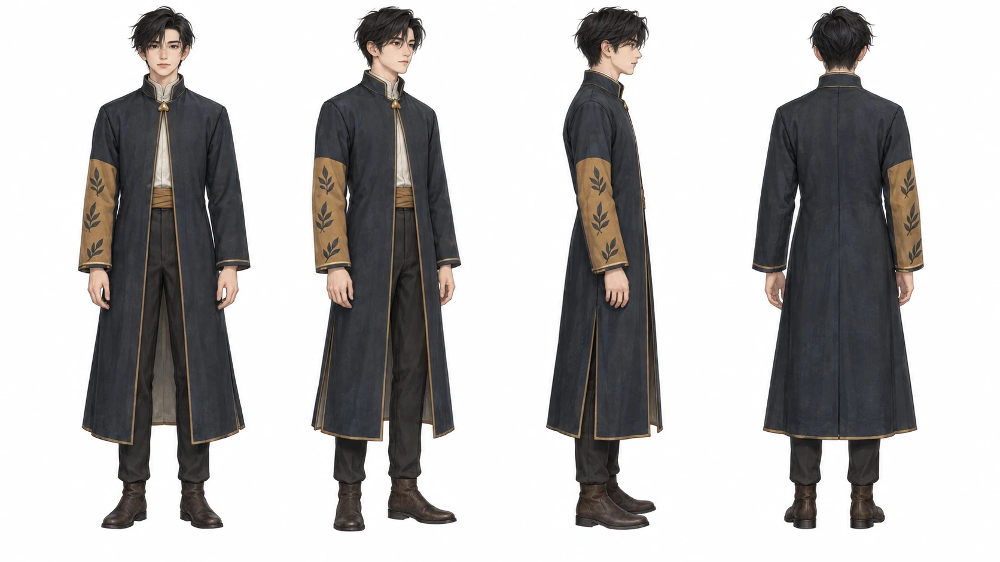
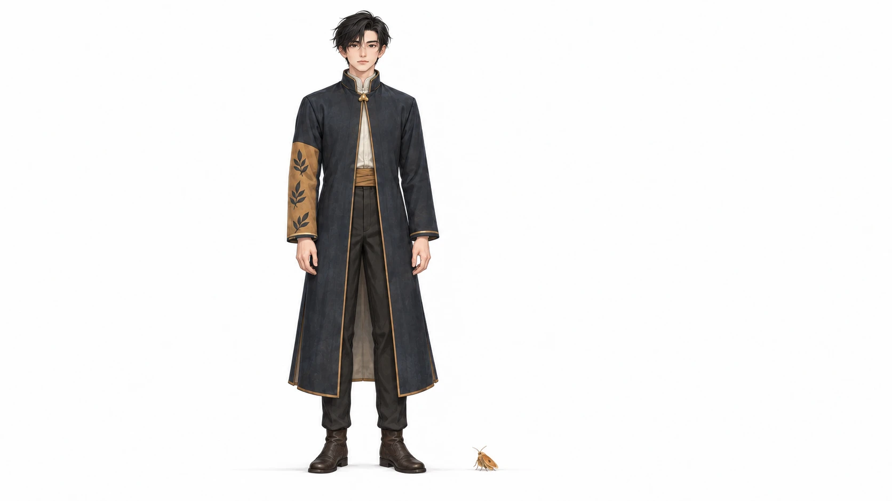
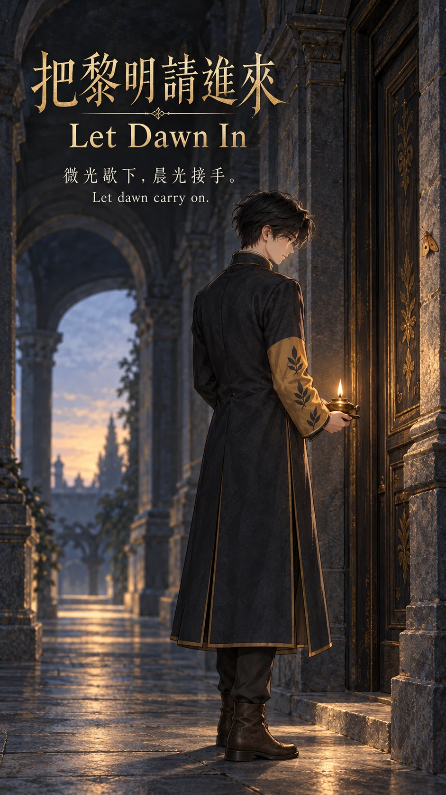
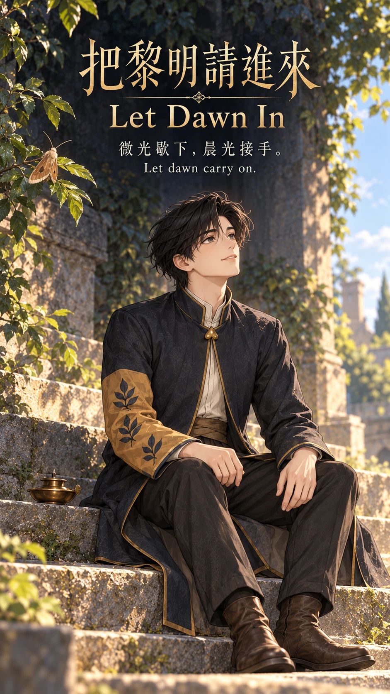

更新日期：2026-11-01
狀態：已確認方案；雙語文字、15 張圖像、字幕與本地圖像總覽已完成並核對。實際影片與音訊尚未生成。
風格：S02｜暗金儀式感敘事厚塗。英文描述：Muted Antique-Gold Cinematic Anime Painting。
全片：60 秒＝片頭 5 秒＋10 個正片鏡頭各 5 秒＋片尾 5 秒。
圖像總覽｜分鏡圖像提示詞｜12 段影片提示詞｜資產清單｜核對報告
正式製作補充：熄燈象徵夜間任務完成，不是光被奪走。青年先看見夜蛾，再主動開窗迎光；最後用燈芯旋鈕熄去火苗。夜蛾保持自然停棲，不擬人引路或接觸火焰。
| 項目 | 中文 | English |
|---|---|---|
| 大標題 | 把黎明請進來 | Let Dawn In |
| 副標題 | 微光歇下，晨光接手。 | Let dawn carry on. |
文字已核對語法與情緒，採自然對應。中文字幕每鏡 6 字，英文為 2–3 個單字的短句；字幕以後製軌交付，不寫進分鏡圖像。
| 段落 | 全片時間 | 時長 |
|---|---|---|
| 片頭 | 00:00–00:05 | 5 秒 |
| 正片十鏡 | 00:05–00:55 | 50 秒 |
| 片尾 | 00:55–01:00 | 5 秒 |
| 鏡號／類型 | 小標題／English | 全片時間 | 中文字幕 | English Caption | 長度 |
|---|---|---|---|---|---|
| 01 遠景 / Wide shot | 守夜微燈 / Keeping the Night | 5–10 秒 | 夜色還在掌間 | Night lingers. | 5 秒 |
| 02 手部特寫 / Hand close-up | 掌間燈火 / A Sheltered Flame | 10–15 秒 | 怕光就此熄滅 | Stay, little light. | 5 秒 |
| 03 近景 / Close-up | 窗隙初明 / A Pale Seam | 15–20 秒 | 窗邊忽有微明 | A pale promise. | 5 秒 |
| 04 微距特寫 / Macro close-up | 蛾向晨光 / First to Notice | 20–25 秒 | 你先看見黎明 | You noticed first. | 5 秒 |
| 05 中近景 / Medium close-up | 推開長夜 / Opening the Night | 25–30 秒 | 把心輕輕推開 | Open the heart. | 5 秒 |
| 06 中遠景 / Medium-wide shot | 晨光入室 / Dawn Enters | 30–35 秒 | 讓晨光走進來 | Let dawn in. | 5 秒 |
| 07 景物近景 / Detail shot | 金紋甦醒 / Gold Awakens | 35–40 秒 | 金色慢慢甦醒 | Gold awakens. | 5 秒 |
| 08 手部特寫 / Hand close-up | 燈火歇息 / The Flame Rests | 40–45 秒 | 燈火也該歇了 | Rest, little flame. | 5 秒 |
| 09 手部近景 / Palm close-up | 掌心新光 / Light in the Palm | 45–50 秒 | 掌心接住新光 | New light settles. | 5 秒 |
| 10 全景 / Full shot | 向晨而立 / Facing the Morning | 50–55 秒 | 天亮就向前走 | Step into morning. | 5 秒 |
類型：遠景 / Wide shot；全片 5–10 秒，5 秒。
中文
青年站在左側矮燈台前，兩手隔著空隙護住微小火苗；大廳幽暗，右側窗扇僅留一道淡亮細縫，夜蛾尚未入鏡。
English
Ren stands at the low lamp pedestal on the left, shielding its small flame with separated palms. The hall is dim; right-hand shutters leave only a pale narrow seam. Amber is out of frame.
字幕：夜色還在掌間 / Night lingers.
聲音建議：低密度夜間空氣聲、微弱燈芯聲。
中文
9:16直式單張，無字幕、文字、標誌或浮水印。S02｜暗金儀式感敘事厚塗。低彩度炭灰、冷藍暗部與局部暗金，細線與塗繪體積並用，柔硬邊緣交替，輕微顆粒與筆觸；前景遮擋、空間分層、克制表情。保留動漫人物造型，不作寫實攝影、極簡平塗或三維渲染。同一座古老大廳：炭藍石柱、後牆暗金葉紋浮雕、啞光灰石地面，左側85公分高的矮石燈台；高窗固定在畫面右側牆面，窗台約一公尺高，兩扇內開式木窗扇、簡單黃銅把手。黎明自然光由右側窗外進入，影子朝左後方延伸。無鏡面地板、重複人物或其他燈火。唯一夜燈：小型古黃銅油燈、低圓底座、短燈芯頭、一團小火苗，底座朝青年一側有一枚圓形燈芯旋鈕；無玻璃罩、長提把或第二燈頭。01–07點亮，08轉低燈芯後熄滅，09背景燈保持熄滅，10與片尾均已熄滅。依角色設定與共同比例表固定外觀，只加入本鏡出場角色；無多餘手腳、六指、重複翅膀、動態弧線、殘影、穿插或不合理倒影。澄，20歲青年守燈學徒，約172公分、纖細七頭身，暖白膚色、灰棕眼，黑色短層次髮，長瀏海偏向本人右側、後頸修短。深灰藍及小腿長外衣、細暗金滾邊；本人右袖自肘至袖口有暗金袖片與三組深色葉枝，左袖素色僅細金袖邊。米白內衫、窄赭色腰帶、炭灰長褲、深棕踝靴，喉下單枚小黃銅水滴扣；無手套或其他飾品。青年站在左側矮燈台前，兩手隔著空隙護住微小火苗；大廳幽暗，右側窗扇僅留一道淡亮細縫，夜蛾尚未入鏡。
English
Use case: illustration-story. ONE portrait9:16 storyboard, ideally864x1536. NO words, captions, logos or watermark. S02 muted antique-gold ceremonial narrative anime painting. Cool charcoal-blue shadows, restrained aged-gold material accents, fine drawn edges mixed with softly painted volume, soft/hard edge control, subtle grain and visible brushwork, layered depth and quiet expressions. Anime character design, not photography, flat vector art or3D. One old hall: charcoal-blue stone columns, aged-gold leafy relief on rear wall, matte gray stone floor,85cm-high stone lamp pedestal at LEFT; ONE tall window fixed in RIGHT wall, sill at1m, a pair of inward-opening wooden shutters with simple brass handles. Dawn enters from outside RIGHT and casts shadows toward left/back. No mirrored floors, duplicate people or extra flames. ONE small antique-brass oil lamp: low round base, short wick head, one small flame, one round wick-control knob on the side facing the keeper. No glass chimney, tall handle or second burner. Lit in01–07, extinguished by lowering wick in08; unlit if visible in09 background; unlit in10 and ending poster. Reference sheets lock identity and scale, NOT composition. Only listed visible actors. Correct anatomy; no extra hands/digits, doubled wings, motion arcs, trails, intersections or impossible reflections. Ren, a20-year-old male apprentice lamp keeper,172cm, slim seven-head proportions, warm pale skin, gray-brown eyes, layered short ink-black hair with longer fringe swept to HIS RIGHT and tapered nape. Calf-length charcoal-blue coat with thin antique-gold piping; HIS RIGHT forearm sleeve has one gold panel with THREE dark leaf sprigs, LEFT sleeve plain with fine gold cuff edge. Ivory inner shirt, narrow ochre sash, charcoal trousers, dark-brown ankle boots, one small brass teardrop throat clasp. No gloves or other jewelry. Wide oblique view from front-left: man left of center at stone lamp pedestal, TWO cupped hands separated around small lit oil lamp, palms10cm from flame, no touching. Right-wall tall wooden shutters nearly shut with a very thin cool dawn seam. Rear gold leafy relief barely visible. Moth absent. Whole boots and pedestal-floor contacts visible; camera does not look through solid walls.
中文
以shot_01.png為起始幀，9:16。5秒，緩推約3%；青年輕吸氣，火苗小幅自然擺動，兩手維持位置，右側細縫不突然變寬。 固定角色、右側暗金袖片與道具位置，窗外光源始終來自右方；無文字、動態線或新增角色。
English
Use shot_01.png as starting frame,9:16. 5 seconds, push in about3%. One small breath; flame flickers subtly, both hands stay in place, window seam stays narrow. Keep identity, RIGHT gold sleeve, props and window orientation fixed; dawn stays from RIGHT. No lettering, motion marks or new actors.
類型：手部特寫 / Hand close-up；全片 10–15 秒，5 秒。
中文
只見油燈與兩隻護燈的手，金色右袖在正面畫面左側，素色左袖在右側；雙手不交疊、不碰觸火苗。
English
Close on the lamp and two sheltering hands. The gold right sleeve is viewer-left; the plain left sleeve is viewer-right. Hands remain separate and do not touch the flame.
字幕：怕光就此熄滅 / Stay, little light.
聲音建議：燈芯輕響、一次輕呼吸。
中文
9:16直式單張，無字幕、文字、標誌或浮水印。S02｜暗金儀式感敘事厚塗。低彩度炭灰、冷藍暗部與局部暗金，細線與塗繪體積並用，柔硬邊緣交替，輕微顆粒與筆觸；前景遮擋、空間分層、克制表情。保留動漫人物造型，不作寫實攝影、極簡平塗或三維渲染。同一座古老大廳：炭藍石柱、後牆暗金葉紋浮雕、啞光灰石地面，左側85公分高的矮石燈台；高窗固定在畫面右側牆面，窗台約一公尺高，兩扇內開式木窗扇、簡單黃銅把手。黎明自然光由右側窗外進入，影子朝左後方延伸。無鏡面地板、重複人物或其他燈火。唯一夜燈：小型古黃銅油燈、低圓底座、短燈芯頭、一團小火苗，底座朝青年一側有一枚圓形燈芯旋鈕；無玻璃罩、長提把或第二燈頭。01–07點亮，08轉低燈芯後熄滅，09背景燈保持熄滅，10與片尾均已熄滅。依角色設定與共同比例表固定外觀，只加入本鏡出場角色；無多餘手腳、六指、重複翅膀、動態弧線、殘影、穿插或不合理倒影。澄，20歲青年守燈學徒，約172公分、纖細七頭身，暖白膚色、灰棕眼，黑色短層次髮，長瀏海偏向本人右側、後頸修短。深灰藍及小腿長外衣、細暗金滾邊；本人右袖自肘至袖口有暗金袖片與三組深色葉枝，左袖素色僅細金袖邊。米白內衫、窄赭色腰帶、炭灰長褲、深棕踝靴，喉下單枚小黃銅水滴扣；無手套或其他飾品。只見油燈與兩隻護燈的手，金色右袖在正面畫面左側，素色左袖在右側；雙手不交疊、不碰觸火苗。
English
Use case: illustration-story. ONE portrait9:16 storyboard, ideally864x1536. NO words, captions, logos or watermark. S02 muted antique-gold ceremonial narrative anime painting. Cool charcoal-blue shadows, restrained aged-gold material accents, fine drawn edges mixed with softly painted volume, soft/hard edge control, subtle grain and visible brushwork, layered depth and quiet expressions. Anime character design, not photography, flat vector art or3D. One old hall: charcoal-blue stone columns, aged-gold leafy relief on rear wall, matte gray stone floor,85cm-high stone lamp pedestal at LEFT; ONE tall window fixed in RIGHT wall, sill at1m, a pair of inward-opening wooden shutters with simple brass handles. Dawn enters from outside RIGHT and casts shadows toward left/back. No mirrored floors, duplicate people or extra flames. ONE small antique-brass oil lamp: low round base, short wick head, one small flame, one round wick-control knob on the side facing the keeper. No glass chimney, tall handle or second burner. Lit in01–07, extinguished by lowering wick in08; unlit if visible in09 background; unlit in10 and ending poster. Reference sheets lock identity and scale, NOT composition. Only listed visible actors. Correct anatomy; no extra hands/digits, doubled wings, motion arcs, trails, intersections or impossible reflections. Ren, a20-year-old male apprentice lamp keeper,172cm, slim seven-head proportions, warm pale skin, gray-brown eyes, layered short ink-black hair with longer fringe swept to HIS RIGHT and tapered nape. Calf-length charcoal-blue coat with thin antique-gold piping; HIS RIGHT forearm sleeve has one gold panel with THREE dark leaf sprigs, LEFT sleeve plain with fine gold cuff edge. Ivory inner shirt, narrow ochre sash, charcoal trousers, dark-brown ankle boots, one small brass teardrop throat clasp. No gloves or other jewelry. Tight hands-and-lamp close-up, man face and moth out of frame. ONE brass lamp stands securely on flat stone pedestal. Exactly TWO natural cupped hands at left/right of lamp, separated, FIVE digits each with realistic occlusion; HIS RIGHT gold-pattern sleeve is on VIEWER LEFT, his plain LEFT sleeve on viewer-right. Tiny single flame between palms with clear10cm air gap. Wick knob visible on near side of lamp base. No glass chimney, overlapping fingers or extra hand.
中文
以shot_02.png為起始幀，9:16。5秒，固定鏡頭；雙手因呼吸微動後停穩，小火苗擺動一次，燈座與旋鈕不移位，不新增手指。 固定角色、右側暗金袖片與道具位置，窗外光源始終來自右方；無文字、動態線或新增角色。
English
Use shot_02.png as starting frame,9:16. 5 seconds, locked. Hands make a tiny breathing movement and settle; flame wavers once. Keep lamp base and knob fixed; no new fingers. Keep identity, RIGHT gold sleeve, props and window orientation fixed; dawn stays from RIGHT. No lettering, motion marks or new actors.
類型：近景 / Close-up；全片 15–20 秒，5 秒。
中文
青年臉部近景，仍帶些不捨；右方細窄晨光落在臉側，他的視線開始轉向窗邊，雙手在畫外。
English
Close on Ren's reluctant expression. A thin dawn rim touches his right-facing cheek; his gaze shifts toward the window. Hands are outside frame.
字幕：窗邊忽有微明 / A pale promise.
聲音建議：遠方清晨空氣聲漸入。
中文
9:16直式單張，無字幕、文字、標誌或浮水印。S02｜暗金儀式感敘事厚塗。低彩度炭灰、冷藍暗部與局部暗金，細線與塗繪體積並用，柔硬邊緣交替，輕微顆粒與筆觸；前景遮擋、空間分層、克制表情。保留動漫人物造型，不作寫實攝影、極簡平塗或三維渲染。同一座古老大廳：炭藍石柱、後牆暗金葉紋浮雕、啞光灰石地面，左側85公分高的矮石燈台；高窗固定在畫面右側牆面，窗台約一公尺高，兩扇內開式木窗扇、簡單黃銅把手。黎明自然光由右側窗外進入，影子朝左後方延伸。無鏡面地板、重複人物或其他燈火。唯一夜燈：小型古黃銅油燈、低圓底座、短燈芯頭、一團小火苗，底座朝青年一側有一枚圓形燈芯旋鈕；無玻璃罩、長提把或第二燈頭。01–07點亮，08轉低燈芯後熄滅，09背景燈保持熄滅，10與片尾均已熄滅。依角色設定與共同比例表固定外觀，只加入本鏡出場角色；無多餘手腳、六指、重複翅膀、動態弧線、殘影、穿插或不合理倒影。澄，20歲青年守燈學徒，約172公分、纖細七頭身，暖白膚色、灰棕眼，黑色短層次髮，長瀏海偏向本人右側、後頸修短。深灰藍及小腿長外衣、細暗金滾邊；本人右袖自肘至袖口有暗金袖片與三組深色葉枝，左袖素色僅細金袖邊。米白內衫、窄赭色腰帶、炭灰長褲、深棕踝靴，喉下單枚小黃銅水滴扣；無手套或其他飾品。青年臉部近景，仍帶些不捨；右方細窄晨光落在臉側，他的視線開始轉向窗邊，雙手在畫外。
English
Use case: illustration-story. ONE portrait9:16 storyboard, ideally864x1536. NO words, captions, logos or watermark. S02 muted antique-gold ceremonial narrative anime painting. Cool charcoal-blue shadows, restrained aged-gold material accents, fine drawn edges mixed with softly painted volume, soft/hard edge control, subtle grain and visible brushwork, layered depth and quiet expressions. Anime character design, not photography, flat vector art or3D. One old hall: charcoal-blue stone columns, aged-gold leafy relief on rear wall, matte gray stone floor,85cm-high stone lamp pedestal at LEFT; ONE tall window fixed in RIGHT wall, sill at1m, a pair of inward-opening wooden shutters with simple brass handles. Dawn enters from outside RIGHT and casts shadows toward left/back. No mirrored floors, duplicate people or extra flames. ONE small antique-brass oil lamp: low round base, short wick head, one small flame, one round wick-control knob on the side facing the keeper. No glass chimney, tall handle or second burner. Lit in01–07, extinguished by lowering wick in08; unlit if visible in09 background; unlit in10 and ending poster. Reference sheets lock identity and scale, NOT composition. Only listed visible actors. Correct anatomy; no extra hands/digits, doubled wings, motion arcs, trails, intersections or impossible reflections. Ren, a20-year-old male apprentice lamp keeper,172cm, slim seven-head proportions, warm pale skin, gray-brown eyes, layered short ink-black hair with longer fringe swept to HIS RIGHT and tapered nape. Calf-length charcoal-blue coat with thin antique-gold piping; HIS RIGHT forearm sleeve has one gold panel with THREE dark leaf sprigs, LEFT sleeve plain with fine gold cuff edge. Ivory inner shirt, narrow ochre sash, charcoal trousers, dark-brown ankle boots, one small brass teardrop throat clasp. No gloves or other jewelry. Face-and-shoulders portrait of Ren, softly painted gray-brown eyes, quiet reluctance, black fringe matching sheet. He looks toward IMAGE RIGHT window, one pale thin cool rim from right, weak warm lamp fill from below-left. No visible hands, lamp or moth in crop. Charcoal-blue coat, central small brass clasp and ivory collar correct. Dark layered hall behind, NOT daylight yet.
中文
以shot_03.png為起始幀，9:16。5秒，極慢推近；青年眨眼一次，視線緩移向右側；只轉頭約10度，光線仍微弱。 固定角色、右側暗金袖片與道具位置，窗外光源始終來自右方；無文字、動態線或新增角色。
English
Use shot_03.png as starting frame,9:16. 5 seconds, very slow push-in. One blink, gaze shifts right, head turns about10 degrees. Light remains faint. Keep identity, RIGHT gold sleeve, props and window orientation fixed; dawn stays from RIGHT. No lettering, motion marks or new actors.
類型：微距特寫 / Macro close-up；全片 20–25 秒，5 秒。
中文
夜蛾停在右側窗台靠近細亮縫的位置，背翅水滴斑與觸角清楚；石材顆粒提供尺寸參照，沒有青年或燈火。
English
Amber rests on the right window sill by a thin seam of dawn. Wing markings and antennae are clear; stone grain provides scale. No keeper or lamp appears.
字幕：你先看見黎明 / You noticed first.
聲音建議：極輕木窗聲；不誇大昆蟲聲。
中文
9:16直式單張，無字幕、文字、標誌或浮水印。S02｜暗金儀式感敘事厚塗。低彩度炭灰、冷藍暗部與局部暗金，細線與塗繪體積並用，柔硬邊緣交替，輕微顆粒與筆觸；前景遮擋、空間分層、克制表情。保留動漫人物造型，不作寫實攝影、極簡平塗或三維渲染。同一座古老大廳：炭藍石柱、後牆暗金葉紋浮雕、啞光灰石地面，左側85公分高的矮石燈台；高窗固定在畫面右側牆面，窗台約一公尺高，兩扇內開式木窗扇、簡單黃銅把手。黎明自然光由右側窗外進入，影子朝左後方延伸。無鏡面地板、重複人物或其他燈火。唯一夜燈：小型古黃銅油燈、低圓底座、短燈芯頭、一團小火苗，底座朝青年一側有一枚圓形燈芯旋鈕；無玻璃罩、長提把或第二燈頭。01–07點亮，08轉低燈芯後熄滅，09背景燈保持熄滅，10與片尾均已熄滅。依角色設定與共同比例表固定外觀，只加入本鏡出場角色；無多餘手腳、六指、重複翅膀、動態弧線、殘影、穿插或不合理倒影。琥珀，小型琥珀色夜蛾，展翅約8公分、軀幹約2.5公分；琥珀棕前翅每側中央一枚深棕水滴斑、細米白外緣，後翅素暗金，淡米色絨毛胸部、棕腹，一對觸角、六隻昆蟲足、兩對翅。停棲時雙翅呈低屋脊狀。翼斑不是眼睛，不發光、不擬人；近景透過鏡頭放大，不把實體畫成大型生物。夜蛾停在右側窗台靠近細亮縫的位置，背翅水滴斑與觸角清楚；石材顆粒提供尺寸參照，沒有青年或燈火。
English
Use case: illustration-story. ONE portrait9:16 storyboard, ideally864x1536. NO words, captions, logos or watermark. S02 muted antique-gold ceremonial narrative anime painting. Cool charcoal-blue shadows, restrained aged-gold material accents, fine drawn edges mixed with softly painted volume, soft/hard edge control, subtle grain and visible brushwork, layered depth and quiet expressions. Anime character design, not photography, flat vector art or3D. One old hall: charcoal-blue stone columns, aged-gold leafy relief on rear wall, matte gray stone floor,85cm-high stone lamp pedestal at LEFT; ONE tall window fixed in RIGHT wall, sill at1m, a pair of inward-opening wooden shutters with simple brass handles. Dawn enters from outside RIGHT and casts shadows toward left/back. No mirrored floors, duplicate people or extra flames. ONE small antique-brass oil lamp: low round base, short wick head, one small flame, one round wick-control knob on the side facing the keeper. No glass chimney, tall handle or second burner. Lit in01–07, extinguished by lowering wick in08; unlit if visible in09 background; unlit in10 and ending poster. Reference sheets lock identity and scale, NOT composition. Only listed visible actors. Correct anatomy; no extra hands/digits, doubled wings, motion arcs, trails, intersections or impossible reflections. Amber, a small natural night moth,8cm full wingspan,2.5cm body. Amber-brown forewings each have ONE dark-brown central teardrop spot and thin cream outer edge; plain muted-gold hindwings, beige fuzzy thorax, brown abdomen, one antenna pair, SIX insect legs, TWO wing pairs. Low tent-like resting wings. Spots are markings, not eyes. No glow, human expression or giant size; use camera close-ups for detail. Macro close-up of ONE tiny resting amber moth on rough stone sill, beside nearly closed dark wood shutter vertical seam with thin pale gold light. Natural low tent-like wings, one teardrop spot per forewing, two antennae, six legs with believable occlusion. Rest-wing body about2.5cm, stone grain scale, no man, hand or flame. This is close CAMERA magnification not a giant moth. Dawn sliver at image-right, soft cool hall dark on left.
中文
以shot_04.png為起始幀，9:16。5秒，固定微距；夜蛾只輕轉一次觸角、前足略調整後停住，翅膀保持停棲，不起飛、不出現搖動線。 固定角色、右側暗金袖片與道具位置，窗外光源始終來自右方；無文字、動態線或新增角色。
English
Use shot_04.png as starting frame,9:16. 5 seconds, locked macro. Antennae make one slight adjustment; a front foot settles. Wings remain resting; no take-off or motion marks. Keep identity, RIGHT gold sleeve, props and window orientation fixed; dawn stays from RIGHT. No lettering, motion marks or new actors.
類型：中近景 / Medium close-up；全片 25–30 秒，5 秒。
中文
青年移至右側高窗，金袖右手握住一側黃銅把手，左手低放身旁；窗扇尚未推開，夜蛾留在較遠窗台，不碰手部。
English
At the right-hand window, Ren grips one brass handle with his gold-sleeved right hand; his left stays lowered. Shutters are still almost closed. Amber rests farther along the sill, away from his hand.
字幕：把心輕輕推開 / Open the heart.
聲音建議：沉穩的一聲木窗鉸鏈聲。
中文
9:16直式單張，無字幕、文字、標誌或浮水印。S02｜暗金儀式感敘事厚塗。低彩度炭灰、冷藍暗部與局部暗金，細線與塗繪體積並用，柔硬邊緣交替，輕微顆粒與筆觸；前景遮擋、空間分層、克制表情。保留動漫人物造型，不作寫實攝影、極簡平塗或三維渲染。同一座古老大廳：炭藍石柱、後牆暗金葉紋浮雕、啞光灰石地面，左側85公分高的矮石燈台；高窗固定在畫面右側牆面，窗台約一公尺高，兩扇內開式木窗扇、簡單黃銅把手。黎明自然光由右側窗外進入，影子朝左後方延伸。無鏡面地板、重複人物或其他燈火。唯一夜燈：小型古黃銅油燈、低圓底座、短燈芯頭、一團小火苗，底座朝青年一側有一枚圓形燈芯旋鈕；無玻璃罩、長提把或第二燈頭。01–07點亮，08轉低燈芯後熄滅，09背景燈保持熄滅，10與片尾均已熄滅。依角色設定與共同比例表固定外觀，只加入本鏡出場角色；無多餘手腳、六指、重複翅膀、動態弧線、殘影、穿插或不合理倒影。澄，20歲青年守燈學徒，約172公分、纖細七頭身，暖白膚色、灰棕眼，黑色短層次髮，長瀏海偏向本人右側、後頸修短。深灰藍及小腿長外衣、細暗金滾邊；本人右袖自肘至袖口有暗金袖片與三組深色葉枝，左袖素色僅細金袖邊。米白內衫、窄赭色腰帶、炭灰長褲、深棕踝靴，喉下單枚小黃銅水滴扣；無手套或其他飾品。琥珀，小型琥珀色夜蛾，展翅約8公分、軀幹約2.5公分；琥珀棕前翅每側中央一枚深棕水滴斑、細米白外緣，後翅素暗金，淡米色絨毛胸部、棕腹，一對觸角、六隻昆蟲足、兩對翅。停棲時雙翅呈低屋脊狀。翼斑不是眼睛，不發光、不擬人；近景透過鏡頭放大，不把實體畫成大型生物。青年移至右側高窗，金袖右手握住一側黃銅把手，左手低放身旁；窗扇尚未推開，夜蛾留在較遠窗台，不碰手部。
English
Use case: illustration-story. ONE portrait9:16 storyboard, ideally864x1536. NO words, captions, logos or watermark. S02 muted antique-gold ceremonial narrative anime painting. Cool charcoal-blue shadows, restrained aged-gold material accents, fine drawn edges mixed with softly painted volume, soft/hard edge control, subtle grain and visible brushwork, layered depth and quiet expressions. Anime character design, not photography, flat vector art or3D. One old hall: charcoal-blue stone columns, aged-gold leafy relief on rear wall, matte gray stone floor,85cm-high stone lamp pedestal at LEFT; ONE tall window fixed in RIGHT wall, sill at1m, a pair of inward-opening wooden shutters with simple brass handles. Dawn enters from outside RIGHT and casts shadows toward left/back. No mirrored floors, duplicate people or extra flames. ONE small antique-brass oil lamp: low round base, short wick head, one small flame, one round wick-control knob on the side facing the keeper. No glass chimney, tall handle or second burner. Lit in01–07, extinguished by lowering wick in08; unlit if visible in09 background; unlit in10 and ending poster. Reference sheets lock identity and scale, NOT composition. Only listed visible actors. Correct anatomy; no extra hands/digits, doubled wings, motion arcs, trails, intersections or impossible reflections. Ren, a20-year-old male apprentice lamp keeper,172cm, slim seven-head proportions, warm pale skin, gray-brown eyes, layered short ink-black hair with longer fringe swept to HIS RIGHT and tapered nape. Calf-length charcoal-blue coat with thin antique-gold piping; HIS RIGHT forearm sleeve has one gold panel with THREE dark leaf sprigs, LEFT sleeve plain with fine gold cuff edge. Ivory inner shirt, narrow ochre sash, charcoal trousers, dark-brown ankle boots, one small brass teardrop throat clasp. No gloves or other jewelry. Amber, a small natural night moth,8cm full wingspan,2.5cm body. Amber-brown forewings each have ONE dark-brown central teardrop spot and thin cream outer edge; plain muted-gold hindwings, beige fuzzy thorax, brown abdomen, one antenna pair, SIX insect legs, TWO wing pairs. Low tent-like resting wings. Spots are markings, not eyes. No glow, human expression or giant size; use camera close-ups for detail. Medium close side-view at the RIGHT window, same two tall wooden shutters nearly closed. Ren at image-left facing RIGHT; anatomical RIGHT hand with gold sleeve grips ONE brass handle at waist/chest height, thumb opposite four fingers, only that hand visible. Left hand below crop or relaxed at hip. A tiny moth rests on far sill several hand-widths away; do not magnify it. Sliver of dawn between shutters; no lamp in frame. Camera must leave clear space showing shutter hinge/opening path; never put fingers through wood.
中文
以shot_05.png為起始幀，9:16。5秒，固定鏡頭；右手把所握窗扇向室內拉開約20度，左手保持低位，夜蛾仍停棲。窗扇沿固定鉸鏈轉動，手跟隨把手，不穿入窗框。 窗扇為內開式，動作朝室內，不讓手穿過把手或木板。固定角色右側金袖與夜蛾尺度；無文字或動態線。
English
Use shot_05.png as starting frame,9:16. 5 seconds, locked. RIGHT hand pulls its shutter inward about20 degrees on fixed hinges; left stays down, moth remains perched. Hand follows handle without penetrating frame. Shutter opens INTO room; hand stays on handle without penetrating it or wood. Keep RIGHT gold sleeve and small moth scale. No lettering or motion marks.
類型：中遠景 / Medium-wide shot；全片 30–35 秒，5 秒。
中文
較寬斜側鏡位，兩扇窗已開啟，青年站在窗左側放下雙手；一道晨光由右向左照進廳內，夜蛾仍在窗台。
English
A wider oblique view shows both shutters open. Ren stands to the window's left, hands lowered. Dawn streams from right to left across the hall; Amber stays on the sill.
字幕：讓晨光走進來 / Let dawn in.
聲音建議：晨間微風、布料輕響。
中文
9:16直式單張，無字幕、文字、標誌或浮水印。S02｜暗金儀式感敘事厚塗。低彩度炭灰、冷藍暗部與局部暗金，細線與塗繪體積並用，柔硬邊緣交替，輕微顆粒與筆觸；前景遮擋、空間分層、克制表情。保留動漫人物造型，不作寫實攝影、極簡平塗或三維渲染。同一座古老大廳：炭藍石柱、後牆暗金葉紋浮雕、啞光灰石地面，左側85公分高的矮石燈台；高窗固定在畫面右側牆面，窗台約一公尺高，兩扇內開式木窗扇、簡單黃銅把手。黎明自然光由右側窗外進入，影子朝左後方延伸。無鏡面地板、重複人物或其他燈火。唯一夜燈：小型古黃銅油燈、低圓底座、短燈芯頭、一團小火苗，底座朝青年一側有一枚圓形燈芯旋鈕；無玻璃罩、長提把或第二燈頭。01–07點亮，08轉低燈芯後熄滅，09背景燈保持熄滅，10與片尾均已熄滅。依角色設定與共同比例表固定外觀，只加入本鏡出場角色；無多餘手腳、六指、重複翅膀、動態弧線、殘影、穿插或不合理倒影。澄，20歲青年守燈學徒，約172公分、纖細七頭身，暖白膚色、灰棕眼，黑色短層次髮，長瀏海偏向本人右側、後頸修短。深灰藍及小腿長外衣、細暗金滾邊；本人右袖自肘至袖口有暗金袖片與三組深色葉枝，左袖素色僅細金袖邊。米白內衫、窄赭色腰帶、炭灰長褲、深棕踝靴，喉下單枚小黃銅水滴扣；無手套或其他飾品。琥珀，小型琥珀色夜蛾，展翅約8公分、軀幹約2.5公分；琥珀棕前翅每側中央一枚深棕水滴斑、細米白外緣，後翅素暗金，淡米色絨毛胸部、棕腹，一對觸角、六隻昆蟲足、兩對翅。停棲時雙翅呈低屋脊狀。翼斑不是眼睛，不發光、不擬人；近景透過鏡頭放大，不把實體畫成大型生物。較寬斜側鏡位，兩扇窗已開啟，青年站在窗左側放下雙手；一道晨光由右向左照進廳內，夜蛾仍在窗台。
English
Use case: illustration-story. ONE portrait9:16 storyboard, ideally864x1536. NO words, captions, logos or watermark. S02 muted antique-gold ceremonial narrative anime painting. Cool charcoal-blue shadows, restrained aged-gold material accents, fine drawn edges mixed with softly painted volume, soft/hard edge control, subtle grain and visible brushwork, layered depth and quiet expressions. Anime character design, not photography, flat vector art or3D. One old hall: charcoal-blue stone columns, aged-gold leafy relief on rear wall, matte gray stone floor,85cm-high stone lamp pedestal at LEFT; ONE tall window fixed in RIGHT wall, sill at1m, a pair of inward-opening wooden shutters with simple brass handles. Dawn enters from outside RIGHT and casts shadows toward left/back. No mirrored floors, duplicate people or extra flames. ONE small antique-brass oil lamp: low round base, short wick head, one small flame, one round wick-control knob on the side facing the keeper. No glass chimney, tall handle or second burner. Lit in01–07, extinguished by lowering wick in08; unlit if visible in09 background; unlit in10 and ending poster. Reference sheets lock identity and scale, NOT composition. Only listed visible actors. Correct anatomy; no extra hands/digits, doubled wings, motion arcs, trails, intersections or impossible reflections. Ren, a20-year-old male apprentice lamp keeper,172cm, slim seven-head proportions, warm pale skin, gray-brown eyes, layered short ink-black hair with longer fringe swept to HIS RIGHT and tapered nape. Calf-length charcoal-blue coat with thin antique-gold piping; HIS RIGHT forearm sleeve has one gold panel with THREE dark leaf sprigs, LEFT sleeve plain with fine gold cuff edge. Ivory inner shirt, narrow ochre sash, charcoal trousers, dark-brown ankle boots, one small brass teardrop throat clasp. No gloves or other jewelry. Amber, a small natural night moth,8cm full wingspan,2.5cm body. Amber-brown forewings each have ONE dark-brown central teardrop spot and thin cream outer edge; plain muted-gold hindwings, beige fuzzy thorax, brown abdomen, one antenna pair, SIX insect legs, TWO wing pairs. Low tent-like resting wings. Spots are markings, not eyes. No glow, human expression or giant size; use camera close-ups for detail. Medium-wide new oblique interior: tall RIGHT window with BOTH inward wooden shutters now fully open about65degrees; light comes from outside RIGHT, one broad diagonal morning beam toward LEFT floor/back wall. Ren stands to LEFT of window opening, relaxed TWO arms low, right gold sleeve correct, full feet planted. Tiny moth on sill, not enlarged. Lamp remains lit on far left pedestal, only if within frame. Same rear gold leafy relief, morning only beginning to brighten. No second window or extra doors, no blazing supernatural rays.
中文
以shot_06.png為起始幀，9:16。5秒，鏡頭緩向左滑約3%；晨光逐漸明亮，青年放鬆肩膀一次，窗扇與夜蛾停穩，不再推窗。 固定角色、右側暗金袖片與道具位置，窗外光源始終來自右方；無文字、動態線或新增角色。
English
Use shot_06.png as starting frame,9:16. 5 seconds, slide left about3%. Dawn brightens gradually; shoulders relax once. Shutters and moth stay fixed; no repeated opening. Keep identity, RIGHT gold sleeve, props and window orientation fixed; dawn stays from RIGHT. No lettering, motion marks or new actors.
類型：景物近景 / Detail shot；全片 35–40 秒，5 秒。
中文
晨光掠過原本暗淡的葉紋浮雕，金色材質逐步顯出柔和光澤；畫面不出現角色、燈火或文字。
English
Dawn grazes the previously dim leafy relief, revealing a soft antique-gold sheen. No characters, lamp or lettering appear.
字幕：金色慢慢甦醒 / Gold awakens.
聲音建議：旋律加入溫暖長音，保留安靜空間。
中文
9:16直式單張，無字幕、文字、標誌或浮水印。S02｜暗金儀式感敘事厚塗。低彩度炭灰、冷藍暗部與局部暗金，細線與塗繪體積並用，柔硬邊緣交替，輕微顆粒與筆觸；前景遮擋、空間分層、克制表情。保留動漫人物造型，不作寫實攝影、極簡平塗或三維渲染。同一座古老大廳：炭藍石柱、後牆暗金葉紋浮雕、啞光灰石地面，左側85公分高的矮石燈台；高窗固定在畫面右側牆面，窗台約一公尺高，兩扇內開式木窗扇、簡單黃銅把手。黎明自然光由右側窗外進入，影子朝左後方延伸。無鏡面地板、重複人物或其他燈火。唯一夜燈：小型古黃銅油燈、低圓底座、短燈芯頭、一團小火苗，底座朝青年一側有一枚圓形燈芯旋鈕；無玻璃罩、長提把或第二燈頭。01–07點亮，08轉低燈芯後熄滅，09背景燈保持熄滅，10與片尾均已熄滅。依角色設定與共同比例表固定外觀，只加入本鏡出場角色；無多餘手腳、六指、重複翅膀、動態弧線、殘影、穿插或不合理倒影。晨光掠過原本暗淡的葉紋浮雕，金色材質逐步顯出柔和光澤；畫面不出現角色、燈火或文字。
English
Use case: illustration-story. ONE portrait9:16 storyboard, ideally864x1536. NO words, captions, logos or watermark. S02 muted antique-gold ceremonial narrative anime painting. Cool charcoal-blue shadows, restrained aged-gold material accents, fine drawn edges mixed with softly painted volume, soft/hard edge control, subtle grain and visible brushwork, layered depth and quiet expressions. Anime character design, not photography, flat vector art or3D. One old hall: charcoal-blue stone columns, aged-gold leafy relief on rear wall, matte gray stone floor,85cm-high stone lamp pedestal at LEFT; ONE tall window fixed in RIGHT wall, sill at1m, a pair of inward-opening wooden shutters with simple brass handles. Dawn enters from outside RIGHT and casts shadows toward left/back. No mirrored floors, duplicate people or extra flames. ONE small antique-brass oil lamp: low round base, short wick head, one small flame, one round wick-control knob on the side facing the keeper. No glass chimney, tall handle or second burner. Lit in01–07, extinguished by lowering wick in08; unlit if visible in09 background; unlit in10 and ending poster. Reference sheets lock identity and scale, NOT composition. Only listed visible actors. Correct anatomy; no extra hands/digits, doubled wings, motion arcs, trails, intersections or impossible reflections. Close oblique detail of SAME hall aged-gold LEAFY relief inset in charcoal-blue stone wall. Right-side dawn grazing across metal leaf edges, warm highlights with cool dark recesses, soft painterly volume and subtle aged texture. No man, hands, insects, faces, lamp, writing, symbols or independent sparkle graphics. Gilded material reflects natural sunlight; wall does not glow from within. Camera near enough to recognize fixed leaf motif, limited depth-of-field.
中文
以shot_07.png為起始幀，9:16。5秒，緩慢向左平移；隨日光入射，浮雕亮面稍增，葉紋形狀固定，不開花、不生長、不產生閃爍粒子。 固定角色、右側暗金袖片與道具位置，窗外光源始終來自右方；無文字、動態線或新增角色。
English
Use shot_07.png as starting frame,9:16. 5 seconds, slow left slide. Sunlit surfaces brighten slightly, but relief geometry stays fixed. No growing leaves, transformation or sparkling particles. Keep identity, RIGHT gold sleeve, props and window orientation fixed; dawn stays from RIGHT. No lettering, motion marks or new actors.
類型：手部特寫 / Hand close-up；全片 40–45 秒，5 秒。
中文
回到矮燈台，晨光已足夠。金袖右手捏住油燈底座的圓鈕，火苗尚小；左手在畫外，準備讓燈火休息。
English
Back at the pedestal, daylight is sufficient. Ren's gold-sleeved right hand holds the lamp's wick knob; the flame is still small. His left hand stays off-screen.
字幕：燈火也該歇了 / Rest, little flame.
聲音建議：輕微旋鈕聲，音樂不作悲傷下墜。
中文
9:16直式單張，無字幕、文字、標誌或浮水印。S02｜暗金儀式感敘事厚塗。低彩度炭灰、冷藍暗部與局部暗金，細線與塗繪體積並用，柔硬邊緣交替，輕微顆粒與筆觸；前景遮擋、空間分層、克制表情。保留動漫人物造型，不作寫實攝影、極簡平塗或三維渲染。同一座古老大廳：炭藍石柱、後牆暗金葉紋浮雕、啞光灰石地面，左側85公分高的矮石燈台；高窗固定在畫面右側牆面，窗台約一公尺高，兩扇內開式木窗扇、簡單黃銅把手。黎明自然光由右側窗外進入，影子朝左後方延伸。無鏡面地板、重複人物或其他燈火。唯一夜燈：小型古黃銅油燈、低圓底座、短燈芯頭、一團小火苗，底座朝青年一側有一枚圓形燈芯旋鈕；無玻璃罩、長提把或第二燈頭。01–07點亮，08轉低燈芯後熄滅，09背景燈保持熄滅，10與片尾均已熄滅。依角色設定與共同比例表固定外觀，只加入本鏡出場角色；無多餘手腳、六指、重複翅膀、動態弧線、殘影、穿插或不合理倒影。澄，20歲青年守燈學徒，約172公分、纖細七頭身，暖白膚色、灰棕眼，黑色短層次髮，長瀏海偏向本人右側、後頸修短。深灰藍及小腿長外衣、細暗金滾邊；本人右袖自肘至袖口有暗金袖片與三組深色葉枝，左袖素色僅細金袖邊。米白內衫、窄赭色腰帶、炭灰長褲、深棕踝靴，喉下單枚小黃銅水滴扣；無手套或其他飾品。回到矮燈台，晨光已足夠。金袖右手捏住油燈底座的圓鈕，火苗尚小；左手在畫外，準備讓燈火休息。 此時高窗已開；背景如入鏡，只顯示已開的窗扇邊緣，不回到緊閉細縫。
English
Use case: illustration-story. ONE portrait9:16 storyboard, ideally864x1536. NO words, captions, logos or watermark. S02 muted antique-gold ceremonial narrative anime painting. Cool charcoal-blue shadows, restrained aged-gold material accents, fine drawn edges mixed with softly painted volume, soft/hard edge control, subtle grain and visible brushwork, layered depth and quiet expressions. Anime character design, not photography, flat vector art or3D. One old hall: charcoal-blue stone columns, aged-gold leafy relief on rear wall, matte gray stone floor,85cm-high stone lamp pedestal at LEFT; ONE tall window fixed in RIGHT wall, sill at1m, a pair of inward-opening wooden shutters with simple brass handles. Dawn enters from outside RIGHT and casts shadows toward left/back. No mirrored floors, duplicate people or extra flames. ONE small antique-brass oil lamp: low round base, short wick head, one small flame, one round wick-control knob on the side facing the keeper. No glass chimney, tall handle or second burner. Lit in01–07, extinguished by lowering wick in08; unlit if visible in09 background; unlit in10 and ending poster. Reference sheets lock identity and scale, NOT composition. Only listed visible actors. Correct anatomy; no extra hands/digits, doubled wings, motion arcs, trails, intersections or impossible reflections. Ren, a20-year-old male apprentice lamp keeper,172cm, slim seven-head proportions, warm pale skin, gray-brown eyes, layered short ink-black hair with longer fringe swept to HIS RIGHT and tapered nape. Calf-length charcoal-blue coat with thin antique-gold piping; HIS RIGHT forearm sleeve has one gold panel with THREE dark leaf sprigs, LEFT sleeve plain with fine gold cuff edge. Ivory inner shirt, narrow ochre sash, charcoal trousers, dark-brown ankle boots, one small brass teardrop throat clasp. No gloves or other jewelry. Close hands-and-lamp detail with daylight from image RIGHT, same ONE low brass oil lamp on stone pedestal as shot02, same near-side round wick knob. Exactly ONE visible hand: HIS RIGHT hand emerging from gold sleeve on IMAGE LEFT, thumb and index gently pinching the side knob, other three fingers naturally curled. Lamp still has a TINY lit flame at beginning of action, no chimney. Left hand, face and moth completely off-frame. No snuffer, no extra cap or tool, no hand through metal, clear lamp shape and small flame. At this time the window is ALREADY OPEN; any background view must show open shutters or cropped open edge, never return to nearly closed slit.
中文
以shot_08.png為起始幀，9:16。5秒，固定鏡頭；右手將燈芯旋鈕輕轉一次，小火苗縮小並熄滅，最後停留一秒。燈座固定，手不移至火苗，不新增工具或煙霧團。 固定角色、右側暗金袖片與道具位置，窗外光源始終來自右方；無文字、動態線或新增角色。
English
Use shot_08.png as starting frame,9:16. 5 seconds, locked. RIGHT hand turns wick knob once; tiny flame shrinks and goes out. Hold last second. Base stays fixed; hand never moves over wick. No added tool or smoke cloud. Keep identity, RIGHT gold sleeve, props and window orientation fixed; dawn stays from RIGHT. No lettering, motion marks or new actors.
類型：手部近景 / Palm close-up；全片 45–50 秒，5 秒。
中文
青年在窗邊攤開右手掌，柔和晨光落在掌心；金袖邊與五指輪廓清楚。沒有火焰、光球或第二隻手。 左後景如見油燈，燈芯必須熄滅。
English
By the window, Ren opens his right palm into natural dawn light. The gold cuff and five digits remain clear. No flame, light orb or second hand appears. If the lamp appears in the left background, its wick is unlit.
字幕：掌心接住新光 / New light settles.
聲音建議：一聲平穩呼氣，晨間底音。
中文
9:16直式單張，無字幕、文字、標誌或浮水印。S02｜暗金儀式感敘事厚塗。低彩度炭灰、冷藍暗部與局部暗金，細線與塗繪體積並用，柔硬邊緣交替，輕微顆粒與筆觸；前景遮擋、空間分層、克制表情。保留動漫人物造型，不作寫實攝影、極簡平塗或三維渲染。同一座古老大廳：炭藍石柱、後牆暗金葉紋浮雕、啞光灰石地面，左側85公分高的矮石燈台；高窗固定在畫面右側牆面，窗台約一公尺高，兩扇內開式木窗扇、簡單黃銅把手。黎明自然光由右側窗外進入，影子朝左後方延伸。無鏡面地板、重複人物或其他燈火。唯一夜燈：小型古黃銅油燈、低圓底座、短燈芯頭、一團小火苗，底座朝青年一側有一枚圓形燈芯旋鈕；無玻璃罩、長提把或第二燈頭。01–07點亮，08轉低燈芯後熄滅，09背景燈保持熄滅，10與片尾均已熄滅。依角色設定與共同比例表固定外觀，只加入本鏡出場角色；無多餘手腳、六指、重複翅膀、動態弧線、殘影、穿插或不合理倒影。澄，20歲青年守燈學徒，約172公分、纖細七頭身，暖白膚色、灰棕眼，黑色短層次髮，長瀏海偏向本人右側、後頸修短。深灰藍及小腿長外衣、細暗金滾邊；本人右袖自肘至袖口有暗金袖片與三組深色葉枝，左袖素色僅細金袖邊。米白內衫、窄赭色腰帶、炭灰長褲、深棕踝靴，喉下單枚小黃銅水滴扣；無手套或其他飾品。青年在窗邊攤開右手掌，柔和晨光落在掌心；金袖邊與五指輪廓清楚。沒有火焰、光球或第二隻手。 背景油燈若入鏡，必須已熄滅，無火苗。
English
Use case: illustration-story. ONE portrait9:16 storyboard, ideally864x1536. NO words, captions, logos or watermark. S02 muted antique-gold ceremonial narrative anime painting. Cool charcoal-blue shadows, restrained aged-gold material accents, fine drawn edges mixed with softly painted volume, soft/hard edge control, subtle grain and visible brushwork, layered depth and quiet expressions. Anime character design, not photography, flat vector art or3D. One old hall: charcoal-blue stone columns, aged-gold leafy relief on rear wall, matte gray stone floor,85cm-high stone lamp pedestal at LEFT; ONE tall window fixed in RIGHT wall, sill at1m, a pair of inward-opening wooden shutters with simple brass handles. Dawn enters from outside RIGHT and casts shadows toward left/back. No mirrored floors, duplicate people or extra flames. ONE small antique-brass oil lamp: low round base, short wick head, one small flame, one round wick-control knob on the side facing the keeper. No glass chimney, tall handle or second burner. Lit in01–07, extinguished by lowering wick in08; unlit if visible in09 background; unlit in10 and ending poster. Reference sheets lock identity and scale, NOT composition. Only listed visible actors. Correct anatomy; no extra hands/digits, doubled wings, motion arcs, trails, intersections or impossible reflections. Ren, a20-year-old male apprentice lamp keeper,172cm, slim seven-head proportions, warm pale skin, gray-brown eyes, layered short ink-black hair with longer fringe swept to HIS RIGHT and tapered nape. Calf-length charcoal-blue coat with thin antique-gold piping; HIS RIGHT forearm sleeve has one gold panel with THREE dark leaf sprigs, LEFT sleeve plain with fine gold cuff edge. Ivory inner shirt, narrow ochre sash, charcoal trousers, dark-brown ankle boots, one small brass teardrop throat clasp. No gloves or other jewelry. Close-up of ONE open RIGHT human palm receiving ordinary sunlight from right window. Gold-panel RIGHT sleeve enters from lower-left; wrist and forearm naturally connected to out-of-frame Ren, palm angled upward, one opposed thumb plus FOUR relaxed fingers, correct five-digit anatomy with space between fingertips. No second hand, no floating disconnected limb, no flame or glowing orb on palm, no moth landing on fingers. Blurred OPEN wood window frame at upper-right and cool hall behind, softly painted skin in natural dawn. The light is just illumination, not a material object. If the lamp appears in background it MUST be UNLIT, with dark wick and NO flame.
中文
以shot_09.png為起始幀，9:16。5秒，固定近景；掌心緩抬一兩公分後停穩，晨光保持柔和，五指不張合、不增加；不生成光球或火焰。 固定角色、右側暗金袖片與道具位置，窗外光源始終來自右方；無文字、動態線或新增角色。 背景油燈保持熄滅，絕不重新燃起。
English
Use shot_09.png as starting frame,9:16. 5 seconds, locked close-up. Palm rises1–2cm and settles in soft dawn. Fingers stay relaxed and stable; no extra digits, light orb or flame. Keep identity, RIGHT gold sleeve, props and window orientation fixed; dawn stays from RIGHT. No lettering, motion marks or new actors. Background lamp stays extinguished, never relights.
類型：全景 / Full shot；全片 50–55 秒，5 秒。
中文
從大廳另一側較低機位看向高窗：青年站在光中，雙手自然垂放，微笑迎晨；熄滅的油燈留在左前景燈台，夜蛾安穩停在窗台。
English
From a lower angle across the hall, Ren stands in dawn with both hands relaxed, smiling toward morning. The extinguished lamp rests on the left foreground pedestal; Amber remains on the sill.
字幕：天亮就向前走 / Step into morning.
聲音建議：溫暖收束和弦，接續片尾的晨風。
中文
9:16直式單張，無字幕、文字、標誌或浮水印。S02｜暗金儀式感敘事厚塗。低彩度炭灰、冷藍暗部與局部暗金，細線與塗繪體積並用，柔硬邊緣交替，輕微顆粒與筆觸；前景遮擋、空間分層、克制表情。保留動漫人物造型，不作寫實攝影、極簡平塗或三維渲染。同一座古老大廳：炭藍石柱、後牆暗金葉紋浮雕、啞光灰石地面，左側85公分高的矮石燈台；高窗固定在畫面右側牆面，窗台約一公尺高，兩扇內開式木窗扇、簡單黃銅把手。黎明自然光由右側窗外進入，影子朝左後方延伸。無鏡面地板、重複人物或其他燈火。唯一夜燈：小型古黃銅油燈、低圓底座、短燈芯頭、一團小火苗，底座朝青年一側有一枚圓形燈芯旋鈕；無玻璃罩、長提把或第二燈頭。01–07點亮，08轉低燈芯後熄滅，09背景燈保持熄滅，10與片尾均已熄滅。依角色設定與共同比例表固定外觀，只加入本鏡出場角色；無多餘手腳、六指、重複翅膀、動態弧線、殘影、穿插或不合理倒影。澄，20歲青年守燈學徒，約172公分、纖細七頭身，暖白膚色、灰棕眼，黑色短層次髮，長瀏海偏向本人右側、後頸修短。深灰藍及小腿長外衣、細暗金滾邊；本人右袖自肘至袖口有暗金袖片與三組深色葉枝，左袖素色僅細金袖邊。米白內衫、窄赭色腰帶、炭灰長褲、深棕踝靴，喉下單枚小黃銅水滴扣；無手套或其他飾品。琥珀，小型琥珀色夜蛾，展翅約8公分、軀幹約2.5公分；琥珀棕前翅每側中央一枚深棕水滴斑、細米白外緣，後翅素暗金，淡米色絨毛胸部、棕腹，一對觸角、六隻昆蟲足、兩對翅。停棲時雙翅呈低屋脊狀。翼斑不是眼睛，不發光、不擬人；近景透過鏡頭放大，不把實體畫成大型生物。從大廳另一側較低機位看向高窗：青年站在光中，雙手自然垂放，微笑迎晨；熄滅的油燈留在左前景燈台，夜蛾安穩停在窗台。
English
Use case: illustration-story. ONE portrait9:16 storyboard, ideally864x1536. NO words, captions, logos or watermark. S02 muted antique-gold ceremonial narrative anime painting. Cool charcoal-blue shadows, restrained aged-gold material accents, fine drawn edges mixed with softly painted volume, soft/hard edge control, subtle grain and visible brushwork, layered depth and quiet expressions. Anime character design, not photography, flat vector art or3D. One old hall: charcoal-blue stone columns, aged-gold leafy relief on rear wall, matte gray stone floor,85cm-high stone lamp pedestal at LEFT; ONE tall window fixed in RIGHT wall, sill at1m, a pair of inward-opening wooden shutters with simple brass handles. Dawn enters from outside RIGHT and casts shadows toward left/back. No mirrored floors, duplicate people or extra flames. ONE small antique-brass oil lamp: low round base, short wick head, one small flame, one round wick-control knob on the side facing the keeper. No glass chimney, tall handle or second burner. Lit in01–07, extinguished by lowering wick in08; unlit if visible in09 background; unlit in10 and ending poster. Reference sheets lock identity and scale, NOT composition. Only listed visible actors. Correct anatomy; no extra hands/digits, doubled wings, motion arcs, trails, intersections or impossible reflections. Ren, a20-year-old male apprentice lamp keeper,172cm, slim seven-head proportions, warm pale skin, gray-brown eyes, layered short ink-black hair with longer fringe swept to HIS RIGHT and tapered nape. Calf-length charcoal-blue coat with thin antique-gold piping; HIS RIGHT forearm sleeve has one gold panel with THREE dark leaf sprigs, LEFT sleeve plain with fine gold cuff edge. Ivory inner shirt, narrow ochre sash, charcoal trousers, dark-brown ankle boots, one small brass teardrop throat clasp. No gloves or other jewelry. Amber, a small natural night moth,8cm full wingspan,2.5cm body. Amber-brown forewings each have ONE dark-brown central teardrop spot and thin cream outer edge; plain muted-gold hindwings, beige fuzzy thorax, brown abdomen, one antenna pair, SIX insect legs, TWO wing pairs. Low tent-like resting wings. Spots are markings, not eyes. No glow, human expression or giant size; use camera close-ups for detail. NEW low full-shot from rear-left corner of hall looking toward open RIGHT window, distinct from establishing01. Ren stands full-body beside open window, three-quarter PROFILE facing bright outdoors RIGHT, small relieved hopeful smile, BOTH hands down at own sides, anatomical RIGHT gold sleeve visible. ONE unlit brass oil lamp clearly on stone pedestal in LEFT FOREGROUND, dark wick, NO flame. Tiny moth naturally resting on far window sill. Whole boots on matte floor, diagonal warm dawn from right, gold relief softly lit at back. No open palm gesture, no carried lamp, no duplicates or sky doorway magic.
中文
以shot_10.png為起始幀，9:16。5秒，極慢拉遠約3%；青年抬頭看向窗外並微笑，雙手維持低位，夜蛾只轉動觸角。油燈始終熄滅，晨光不突然變成夕陽。 固定角色、右側暗金袖片與道具位置，窗外光源始終來自右方；無文字、動態線或新增角色。
English
Use shot_10.png as starting frame,9:16. 5 seconds, pull back about3%. Ren raises his gaze outside and smiles, hands stay down; moth adjusts antennae slightly. Lamp remains unlit; maintain morning color. Keep identity, RIGHT gold sleeve, props and window orientation fixed; dawn stays from RIGHT. No lettering, motion marks or new actors.
中文
澄，20歲青年守燈學徒，約172公分、纖細七頭身，暖白膚色、灰棕眼，黑色短層次髮，長瀏海偏向本人右側、後頸修短。深灰藍及小腿長外衣、細暗金滾邊；本人右袖自肘至袖口有暗金袖片與三組深色葉枝，左袖素色僅細金袖邊。米白內衫、窄赭色腰帶、炭灰長褲、深棕踝靴，喉下單枚小黃銅水滴扣；無手套或其他飾品。
English
Ren, a20-year-old male apprentice lamp keeper,172cm, slim seven-head proportions, warm pale skin, gray-brown eyes, layered short ink-black hair with longer fringe swept to HIS RIGHT and tapered nape. Calf-length charcoal-blue coat with thin antique-gold piping; HIS RIGHT forearm sleeve has one gold panel with THREE dark leaf sprigs, LEFT sleeve plain with fine gold cuff edge. Ivory inner shirt, narrow ochre sash, charcoal trousers, dark-brown ankle boots, one small brass teardrop throat clasp. No gloves or other jewelry.
中文
琥珀，小型琥珀色夜蛾，展翅約8公分、軀幹約2.5公分；琥珀棕前翅每側中央一枚深棕水滴斑、細米白外緣，後翅素暗金，淡米色絨毛胸部、棕腹，一對觸角、六隻昆蟲足、兩對翅。停棲時雙翅呈低屋脊狀。翼斑不是眼睛，不發光、不擬人；近景透過鏡頭放大，不把實體畫成大型生物。
English
Amber, a small natural night moth,8cm full wingspan,2.5cm body. Amber-brown forewings each have ONE dark-brown central teardrop spot and thin cream outer edge; plain muted-gold hindwings, beige fuzzy thorax, brown abdomen, one antenna pair, SIX insect legs, TWO wing pairs. Low tent-like resting wings. Spots are markings, not eyes. No glow, human expression or giant size; use camera close-ups for detail.
澄 / Ren：從捨不得熄燈，到願意迎接晨光；用呼吸、視線、手掌與肩膀變化表演。琥珀 / Amber：自然安靜的小訪客，不說話、不露出人類表情。

中文
16:9白背景、均勻光線，青年澄正面、45度側面、側面、背面四個同尺度全身視角。澄，20歲青年守燈學徒，約172公分、纖細七頭身，暖白膚色、灰棕眼，黑色短層次髮，長瀏海偏向本人右側、後頸修短。深灰藍及小腿長外衣、細暗金滾邊；本人右袖自肘至袖口有暗金袖片與三組深色葉枝，左袖素色僅細金袖邊。米白內衫、窄赭色腰帶、炭灰長褲、深棕踝靴，喉下單枚小黃銅水滴扣；無手套或其他飾品。S02｜暗金儀式感敘事厚塗。低彩度炭灰、冷藍暗部與局部暗金，細線與塗繪體積並用，柔硬邊緣交替，輕微顆粒與筆觸；前景遮擋、空間分層、克制表情。保留動漫人物造型，不作寫實攝影、極簡平塗或三維渲染。手臂自然垂放、不持燈，頭腳完整。
English
Use case: illustration-story. ONE production CHARACTER TURNAROUND SHEET, landscape16:9, white background, even neutral lighting, no cast scene shadows, no words or labels. Four FULL-BODY depictions of SAME original 20-year-old East Asian male lantern keeper, front,45-degree three-quarter, strict side, back, one horizontal row, identical scale and common baseline, complete hair and boots. About172cm, slim seven-head proportions, warm pale skin, calm gray-brown eyes, short layered ink-black hair with a soft long fringe swept to his anatomical RIGHT, tapered nape, no beard. Clothing: ankle-midcalf length charcoal-blue high-collared coat, warm ivory inner shirt visible at neck; narrow muted ochre waist sash; straight charcoal trousers; plain dark brown ankle boots. Coat has thin muted-gold edge piping, ONE broad antique-gold panel on his ANATOMICAL RIGHT sleeve from elbow to cuff with exactly three simple dark leaf sprigs; LEFT sleeve charcoal-blue with thin gold cuff piping only. One small plain brass teardrop clasp centered below throat. No hood, no scarf, no hat, no gloves, no jewelry or extra straps. Both empty hands relaxed beside body with five natural digits each, no held lamp. Art style S02: low-saturation cinematic narrative anime painting, cool blue-charcoal base, restrained antique-gold material accents, softly painted dimensional skin and fabric, fine drawn edges mixed with soft painterly transitions, subtle grain and visible brushwork, serious yet tender, NOT flat vector or3D or photoreal. Keep sleeve asymmetry and hair direction identical from every view; original design, no artist imitation. Uniform light makes all costume details readable.
中文
16:9白背景、均勻光線，夜蛾琥珀正面、45度側面、側面與背面四視角。琥珀，小型琥珀色夜蛾，展翅約8公分、軀幹約2.5公分；琥珀棕前翅每側中央一枚深棕水滴斑、細米白外緣，後翅素暗金，淡米色絨毛胸部、棕腹，一對觸角、六隻昆蟲足、兩對翅。停棲時雙翅呈低屋脊狀。翼斑不是眼睛，不發光、不擬人；近景透過鏡頭放大，不把實體畫成大型生物。各視角皆自然停棲，頭、足、翅與觸角完整；背面從腹部末端看向頭部，不重複正面。S02｜暗金儀式感敘事厚塗。低彩度炭灰、冷藍暗部與局部暗金，細線與塗繪體積並用，柔硬邊緣交替，輕微顆粒與筆觸；前景遮擋、空間分層、克制表情。保留動漫人物造型，不作寫實攝影、極簡平塗或三維渲染。
English
Use case: illustration-story. ONE production animal turnaround sheet, landscape16:9, pure white background, uniform neutral lighting. Four clear FULL-BODY depictions of SAME original small amber-colored night moth, evenly spaced in a row: front,45-degree three-quarter, strict side, rear. A natural moth with one small beige furry thorax, one tapered brown abdomen, ONE pair of thin antennae, exactly SIX slender insect legs and TWO pairs of wings; no humanoid face or hands. Natural resting pose with wings held in a low tent-like roof, same pose and physical scale in each view, entire antennae and wings visible. Color and marking design simple and fixed: amber-brown forewings, ONE small dark brown teardrop spot near center of EACH forewing, a thin cream outer border; plain muted gold hindwings, no eyespots. Wing spots are painted markings, not actual eyes. Full spread wingspan8cm, body length2.5cm; enlarged drawings on sheet for readability but retain natural moth proportions. S02 style: low-saturation cinematic anime painting, careful fine edges, softly brushed volume and subtle grain, restrained antique gold with brown-charcoal accents. Entomological body structure simplified into elegant animated character design, not photoreal macro. No decorative lines around body, no motion arcs, no sparkles, no scenery, no text, no labels or watermark. Four views, not four species; no butterfly upright wings, no giant fantasy insect. Fourth rear view is from abdomen end, head mostly hidden, no visible front-facing eyes.

中文
16:9白背景、均勻光線。一位約172公分青年全身與一隻展翅約8公分、軀幹約2.5公分的夜蛾，同尺度、同地面基準。夜蛾停在靴旁，遠小於鞋子；不放大至寵物或人物尺寸，無文字。
English
Use case: illustration-story. ONE shared SIZE REFERENCE sheet,16:9 landscape, pure white background, even light. Input1 is exact male identity/costume; input2 exact moth identity but its enlarged drawing is NOT physical scale. Draw ONLY ONE front full-body male left of center, head and boots entire,172cm tall, relaxed empty hands. Draw ONE TINY moth resting on floor to right of his boots, SAME real-world scale and SAME faint gray ground baseline. Moth full spread8cm/body2.5cm, so its body length must be about1.45% of man height, rest-wing body silhouette about2-3%, absolutely NO larger than a small part of his boot. If male is about850pixels tall, tiny resting moth should be only about20-30pixels long, NOT a pet-sized creature. The viewer should immediately see an ordinary tiny insect beside an adult. Preserve exact charcoal-blue calf-length coat, antique-gold RIGHT sleeve panel with THREE leaf sprigs, plain left sleeve, ivory shirt, ochre sash, dark trousers and boots, black swept hair. Natural insect shape, amber wings with tiny dark teardrop mark on each forewing. Do not enlarge moth to fill empty white space, no magnifier or inset or additional figures. No text, numbers, labels or ruler. Cinematic softly painted S02 anime style, no dramatic scene lighting.
兩位主要角色各有獨立全身正面、45 度側面、側面及背面圖。共同比例表採同尺度、同地面基準，夜蛾遠小於靴子；三張均為白背景、均勻光線、橫式 16:9 構圖。
全片時間：0–5 秒。

中文
故事開始前的外側拱廊。青年以背面三分之二角度站在古老廳門外，雙手低捧油燈底座，面向幽暗入口；夜蛾小小地停在門邊石紋上。畫面看不到大廳高窗或矮燈台，上方留出標題空間。
English
BEFORE the story, OUTSIDE the hall in a quiet charcoal-blue stone ARCADED CORRIDOR, NEW environment not a hall interior. Ren full-body at lower-right, seen from back three-quarter with a small side glimpse of face, stands at old dark doorway, carries ONE small LIT brass oil lamp LOW at waist supported under base by TWO separated natural hands. Correct gold RIGHT sleeve (visible side), no third hand. ONE tiny amber moth resting on doorway stone at far side, ordinary8cm spread, not on flame. No tall hall window, no pedestal, no opened shutters, no interior establishing composition. Upper35% calm dark stone negative space for typography. Antique-gold doorway trim and distant pale predawn sky at corridor end, restrained intimate ritual mood.
海報圖像提示詞
中文
9:16獨立海報。S02｜暗金儀式感敘事厚塗。低彩度炭灰、冷藍暗部與局部暗金，細線與塗繪體積並用，柔硬邊緣交替，輕微顆粒與筆觸；前景遮擋、空間分層、克制表情。保留動漫人物造型，不作寫實攝影、極簡平塗或三維渲染。澄，20歲青年守燈學徒，約172公分、纖細七頭身，暖白膚色、灰棕眼，黑色短層次髮，長瀏海偏向本人右側、後頸修短。深灰藍及小腿長外衣、細暗金滾邊；本人右袖自肘至袖口有暗金袖片與三組深色葉枝，左袖素色僅細金袖邊。米白內衫、窄赭色腰帶、炭灰長褲、深棕踝靴，喉下單枚小黃銅水滴扣；無手套或其他飾品。琥珀，小型琥珀色夜蛾，展翅約8公分、軀幹約2.5公分；琥珀棕前翅每側中央一枚深棕水滴斑、細米白外緣，後翅素暗金，淡米色絨毛胸部、棕腹，一對觸角、六隻昆蟲足、兩對翅。停棲時雙翅呈低屋脊狀。翼斑不是眼睛，不發光、不擬人；近景透過鏡頭放大，不把實體畫成大型生物。唯一夜燈：小型古黃銅油燈、低圓底座、短燈芯頭、一團小火苗，底座朝青年一側有一枚圓形燈芯旋鈕；無玻璃罩、長提把或第二燈頭。01–07點亮，08轉低燈芯後熄滅，09在畫外，10與片尾均已熄滅。故事開始前的外側拱廊。青年以背面三分之二角度站在古老廳門外，雙手低捧油燈底座，面向幽暗入口；夜蛾小小地停在門邊石紋上。畫面看不到大廳高窗或矮燈台，上方留出標題空間。只排版四項文字：「把黎明請進來」「Let Dawn In」「微光歇下，晨光接手。」「Let dawn carry on.」，繁體字、英文與標點準確，片頭片尾完全相同；無其他文字、標籤、署名、標誌或浮水印。
English
Use case: illustration-story. ONE bilingual FILM POSTER,9:16 portrait. S02 muted antique-gold ceremonial narrative anime painting. Cool charcoal-blue shadows, restrained aged-gold material accents, fine drawn edges mixed with softly painted volume, soft/hard edge control, subtle grain and visible brushwork, layered depth and quiet expressions. Anime character design, not photography, flat vector art or3D. Ren, a20-year-old male apprentice lamp keeper,172cm, slim seven-head proportions, warm pale skin, gray-brown eyes, layered short ink-black hair with longer fringe swept to HIS RIGHT and tapered nape. Calf-length charcoal-blue coat with thin antique-gold piping; HIS RIGHT forearm sleeve has one gold panel with THREE dark leaf sprigs, LEFT sleeve plain with fine gold cuff edge. Ivory inner shirt, narrow ochre sash, charcoal trousers, dark-brown ankle boots, one small brass teardrop throat clasp. No gloves or other jewelry. Amber, a small natural night moth,8cm full wingspan,2.5cm body. Amber-brown forewings each have ONE dark-brown central teardrop spot and thin cream outer edge; plain muted-gold hindwings, beige fuzzy thorax, brown abdomen, one antenna pair, SIX insect legs, TWO wing pairs. Low tent-like resting wings. Spots are markings, not eyes. No glow, human expression or giant size; use camera close-ups for detail. ONE small antique-brass oil lamp: low round base, short wick head, one small flame, one round wick-control knob on the side facing the keeper. No glass chimney, tall handle or second burner. Lit in01–07, extinguished by lowering wick in08; off-frame in09; unlit in10 and ending poster. BEFORE the story, OUTSIDE the hall in a quiet charcoal-blue stone ARCADED CORRIDOR, NEW environment not a hall interior. Ren full-body at lower-right, seen from back three-quarter with a small side glimpse of face, stands at old dark doorway, carries ONE small LIT brass oil lamp LOW at waist supported under base by TWO separated natural hands. Correct gold RIGHT sleeve (visible side), no third hand. ONE tiny amber moth resting on doorway stone at far side, ordinary8cm spread, not on flame. No tall hall window, no pedestal, no opened shutters, no interior establishing composition. Upper35% calm dark stone negative space for typography. Antique-gold doorway trim and distant pale predawn sky at corridor end, restrained intimate ritual mood. Render EXACTLY FOUR text blocks: Chinese title 「把黎明請進來」; English title 「Let Dawn In」; Chinese subtitle 「微光歇下，晨光接手。」; English subtitle 「Let dawn carry on.」. Exact Traditional Chinese characters and punctuation. Large elegant pale-gold Chinese title in upper negative space, English title beneath, both subtitles below in smaller clear ivory. Text remains within safe margins and does not cover faces. No credits, extra words, logos, watermark or label. Only one human and one tiny moth, no extra hands.
全片時間：55–60 秒。

中文
散夜後的外側石階與小庭院。青年放鬆坐在低石階上，雙手各自輕放大腿，微笑看向明亮天空；已熄滅油燈安放在身旁石階，夜蛾停在附近窗框外緣的葉片上。無大廳高窗、掌心接光或站姿謝幕，氣氛明亮有希望。
English
AFTER story, OUTDOOR small courtyard stone STEPS in gentle early-morning light, not the hall. Ren seated comfortably on a low step, front three-quarter, both empty hands independently resting on OWN thighs, relaxed hopeful small smile looking up at open pale-blue morning sky. Same coat, gold RIGHT sleeve, boots; ONE small UNLIT brass oil lamp rests securely on stone step BESIDE him, no flame. ONE tiny amber moth rests on a nearby leafy branch at edge of courtyard wall, wing markings fixed, no enlarged magical moth. Upper35% dark shaded courtyard wall or cool foliage provides readable text area, lower image warm with morning and soft gold stone accents. No hall tall shutters, no standing final-shot pose, no open palm gesture, no back-view entry. Distinct optimistic after-story poster.
海報圖像提示詞
中文
9:16獨立海報。S02｜暗金儀式感敘事厚塗。低彩度炭灰、冷藍暗部與局部暗金，細線與塗繪體積並用，柔硬邊緣交替，輕微顆粒與筆觸；前景遮擋、空間分層、克制表情。保留動漫人物造型，不作寫實攝影、極簡平塗或三維渲染。澄，20歲青年守燈學徒，約172公分、纖細七頭身，暖白膚色、灰棕眼，黑色短層次髮，長瀏海偏向本人右側、後頸修短。深灰藍及小腿長外衣、細暗金滾邊；本人右袖自肘至袖口有暗金袖片與三組深色葉枝，左袖素色僅細金袖邊。米白內衫、窄赭色腰帶、炭灰長褲、深棕踝靴，喉下單枚小黃銅水滴扣；無手套或其他飾品。琥珀，小型琥珀色夜蛾，展翅約8公分、軀幹約2.5公分；琥珀棕前翅每側中央一枚深棕水滴斑、細米白外緣，後翅素暗金，淡米色絨毛胸部、棕腹，一對觸角、六隻昆蟲足、兩對翅。停棲時雙翅呈低屋脊狀。翼斑不是眼睛，不發光、不擬人；近景透過鏡頭放大，不把實體畫成大型生物。唯一夜燈：小型古黃銅油燈、低圓底座、短燈芯頭、一團小火苗，底座朝青年一側有一枚圓形燈芯旋鈕；無玻璃罩、長提把或第二燈頭。01–07點亮，08轉低燈芯後熄滅，09在畫外，10與片尾均已熄滅。散夜後的外側石階與小庭院。青年放鬆坐在低石階上，雙手各自輕放大腿，微笑看向明亮天空；已熄滅油燈安放在身旁石階，夜蛾停在附近窗框外緣的葉片上。無大廳高窗、掌心接光或站姿謝幕，氣氛明亮有希望。只排版四項文字：「把黎明請進來」「Let Dawn In」「微光歇下，晨光接手。」「Let dawn carry on.」，繁體字、英文與標點準確，片頭片尾完全相同；無其他文字、標籤、署名、標誌或浮水印。
English
Use case: illustration-story. ONE bilingual FILM POSTER,9:16 portrait. S02 muted antique-gold ceremonial narrative anime painting. Cool charcoal-blue shadows, restrained aged-gold material accents, fine drawn edges mixed with softly painted volume, soft/hard edge control, subtle grain and visible brushwork, layered depth and quiet expressions. Anime character design, not photography, flat vector art or3D. Ren, a20-year-old male apprentice lamp keeper,172cm, slim seven-head proportions, warm pale skin, gray-brown eyes, layered short ink-black hair with longer fringe swept to HIS RIGHT and tapered nape. Calf-length charcoal-blue coat with thin antique-gold piping; HIS RIGHT forearm sleeve has one gold panel with THREE dark leaf sprigs, LEFT sleeve plain with fine gold cuff edge. Ivory inner shirt, narrow ochre sash, charcoal trousers, dark-brown ankle boots, one small brass teardrop throat clasp. No gloves or other jewelry. Amber, a small natural night moth,8cm full wingspan,2.5cm body. Amber-brown forewings each have ONE dark-brown central teardrop spot and thin cream outer edge; plain muted-gold hindwings, beige fuzzy thorax, brown abdomen, one antenna pair, SIX insect legs, TWO wing pairs. Low tent-like resting wings. Spots are markings, not eyes. No glow, human expression or giant size; use camera close-ups for detail. ONE small antique-brass oil lamp: low round base, short wick head, one small flame, one round wick-control knob on the side facing the keeper. No glass chimney, tall handle or second burner. Lit in01–07, extinguished by lowering wick in08; off-frame in09; unlit in10 and ending poster. AFTER story, OUTDOOR small courtyard stone STEPS in gentle early-morning light, not the hall. Ren seated comfortably on a low step, front three-quarter, both empty hands independently resting on OWN thighs, relaxed hopeful small smile looking up at open pale-blue morning sky. Same coat, gold RIGHT sleeve, boots; ONE small UNLIT brass oil lamp rests securely on stone step BESIDE him, no flame. ONE tiny amber moth rests on a nearby leafy branch at edge of courtyard wall, wing markings fixed, no enlarged magical moth. Upper35% dark shaded courtyard wall or cool foliage provides readable text area, lower image warm with morning and soft gold stone accents. No hall tall shutters, no standing final-shot pose, no open palm gesture, no back-view entry. Distinct optimistic after-story poster. Render EXACTLY FOUR text blocks: Chinese title 「把黎明請進來」; English title 「Let Dawn In」; Chinese subtitle 「微光歇下，晨光接手。」; English subtitle 「Let dawn carry on.」. Exact Traditional Chinese characters and punctuation. Large elegant pale-gold Chinese title in upper negative space, English title beneath, both subtitles below in smaller clear ivory. Text remains within safe margins and does not cover faces. No credits, extra words, logos, watermark or label. Only one human and one tiny moth, no extra hands.
兩張海報只使用相同四項文字：中文片名、英文片名、中文副標題、英文副標題。已目視核對繁體字、英文與標點；無其他署名、片號、標籤或標誌。
| 海報 | 時刻／場景 | 姿態與燈具 | 與正片區別 |
|---|---|---|---|
| 片頭 | 入廳前／外側拱廊 | 背側站姿、低捧點亮的油燈 | 01 是廳內燈台前護燈，場景、機位、動作皆不同 |
| 片尾 | 迎晨之後／庭院石階 | 正側坐姿、空手放腿上、熄燈置於身旁 | 10 是廳內窗邊站姿，另採低機位；片尾不重用任何正片畫面 |
全部以內建 image_gen 生成，套用角色設定圖及共同比例。已檢查人物右袖、髮型、雙手、五指、昆蟲翅足、光源、燈具與場景連續性。第 02 鏡已移除多出的胸前金色葉紋，第 09 鏡已移除與熄燈時序不符的背景火苗。
各自使用對應海報作起始幀，各 5 秒。
中文
5秒、9:16。片頭海報為起始幀，鏡頭極慢推近2%；青年只輕吸氣，燈火小幅自然擺動，夜蛾保持停棲。雙手低捧燈座且不改抓握，不走入門內。四項文字固定為平面圖層，內容、字形與螢幕位置不變，無其他文字或角色。
English
5 seconds,9:16, start from opening poster. Very slow2% push-in; one small breath, tiny flame flicker, moth stays perched. Both hands keep supporting base without regripping or walking inside. Lock FOUR text blocks as flat screen overlay with exact spelling, shapes and positions. No new lettering or actors.
中文
5秒、9:16。片尾海報為起始幀，固定鏡頭；青年帶著笑容輕抬眼，夜蛾停棲不飛，葉片只有一次微風輕動。雙手放在自己腿上，油燈全程熄滅。四項文字固定為平面圖層，內容、字形與位置不變，無新增文字、火焰或角色。
English
5 seconds,9:16, start from ending poster. Locked camera; Ren slightly raises his eyes while smiling, moth remains resting, leaf stirs once in a light breeze. Hands stay on OWN thighs, lamp remains UNLIT. Lock all FOUR text blocks as flat overlay, exact spelling/shapes/positions. No added lettering, flame or actors.
四項文字保持固定平面排版。若實際影片工具無法穩定保字，剪輯時沿用海報原有正確文字作固定疊字；不接受錯字或逐幀變字。此部分尚未以影片模型實測。